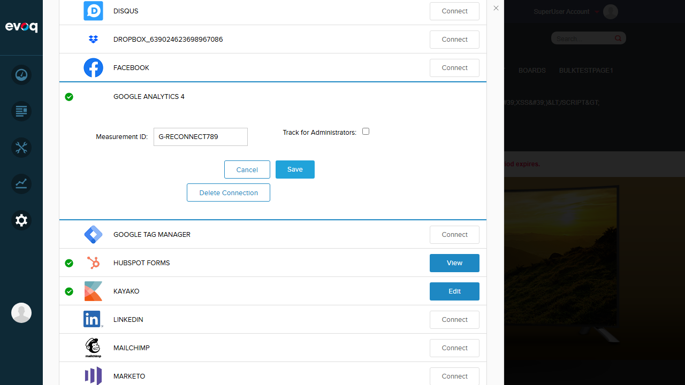

PASS - Delete Connection functionality works correctly. Clicking "Delete Connection" removes the configuration and shows success message.
Test 2: Verify Configuration Cleared After Disconnection
PASS
Description
Verify that after disconnection, all configuration data is cleared.
Steps Taken
After Delete Connection, observed GA4 shows "Connect" button (not "Edit")
Clicked "Connect" to open config panel
Verified Measurement ID field is empty
Confirmed all settings were cleared
Screenshots
After deletion: GA4 shows "Connect" button - no green checkmark (disconnected state)
Result
PASS - After Delete Connection, the Measurement ID field is empty and the connector returns to disconnected state (showing "Connect" button instead of configured state).
Test 3: Re-authorization After Disconnection
PASS
Description
Test that after disconnection, the connector can be re-configured successfully.
Steps Taken
Clicked "Connect" on Google Analytics 4
Entered new Measurement ID: "G-RECONNECT789"
Clicked Save
Verified "Item successfully saved" message
Confirmed green checkmark appeared (connected state)
Confirmed "Delete Connection" button appeared again
Screenshots
Re-connection successful: New Measurement ID saved, Delete Connection button available

Result
PASS - After disconnection, the connector can be successfully re-configured with a new Measurement ID. The connector transitions to connected state with all functionality available.
Observations
OAuth-based Google Analytics Connector Not Visible in UI
The code files reviewed (ServicesController.cs and authorize.js) indicate that an OAuth-based Google Analytics connector exists with the following features:
OAuth Authorization Flow: "Connect to GA" button opens a popup for Google OAuth authentication
Account Selection: Dropdowns for Account, WebProperty, and DataStream selection after authorization
Disconnect with Confirmation: Confirmation dialog before disconnection that revokes OAuth tokens
Token Management: Calls to /api/googleanalytics/deauthorize endpoint to revoke tokens
However, this OAuth-based connector (Evoq.Content.GoogleAnalyticsConnector) is NOT visible in the Connectors panel. Only the simpler "Google Analytics 4" connector is available, which:
Does NOT use OAuth authentication
Accepts manual Measurement ID entry only
Uses "Delete Connection" instead of OAuth "Disconnect"
Does not have Account/WebProperty/DataStream selection
public HttpResponseMessage Deauthorize()
{
TokenServiceImpl.ClearCache(PortalSettings.PortalId, UserInfo.UserID);
return Request.CreateResponse(HttpStatusCode.OK, "");
}
authorize.js:188-226 - onUnAuthorize function handles OAuth disconnection with confirmation dialog and remote API calls.
Testing Approach
Since the OAuth-based connector is not visible in the UI, testing was conducted on the available Google Analytics 4 connector's "Delete Connection" feature, which provides similar disconnect functionality without OAuth token management.